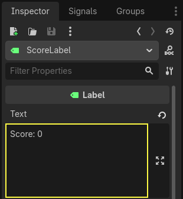
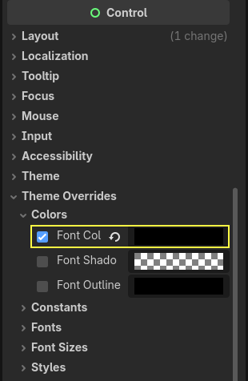
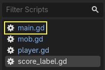
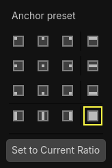
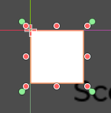
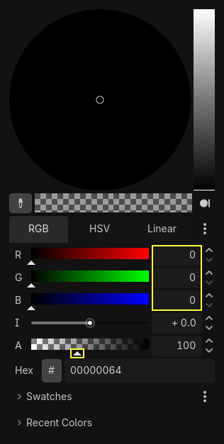
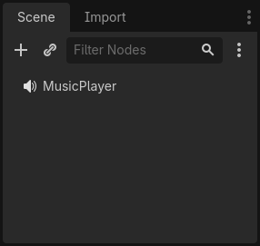
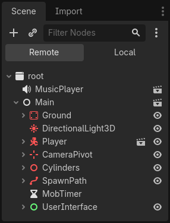

Score and replay
In this part, we'll add the score, music playback, and the ability to restart the game.
We have to keep track of the current score in a variable and display it on screen using a minimal interface. We will use a text label to do that.
In the main scene, add a new child node Control to Main and name it
UserInterface. Ensure you are on the 2D screen, where you can edit your User Interface (UI).
Add a Label node and name it ScoreLabel

In the Inspector, set the Label's Text to a placeholder like "Score: 0".

Also, the text is white by default, like our game's background. We need to change its color to see it at runtime.
Scroll down to Theme Overrides, and expand Colors and enable Font Color in order to tint the text to black (which contrasts well with the white 3D scene)

Finally, click and drag on the text in the viewport to move it away from the top-left corner.

The UserInterface node allows us to group our UI in a branch of the scene tree
and use a theme resource that will propagate to all its children. We'll use it
to set our game's font.
Creating a UI theme
Once again, select the UserInterface node. In the Inspector, create a new
theme resource in Theme -> Theme.

Click on it to open the theme editor In the bottom panel. It gives you a preview of how all the built-in UI widgets will look with your theme resource.

By default, a theme only has a few properties: Default Base Scale, Default Font and Default Font Size.
See also
You can add more properties to the theme resource to design complex user interfaces, but that is beyond the scope of this series. To learn more about creating and editing themes, see Introduction to GUI skinning.
The Default Font expects a font file like the ones you have on your computer. Two common font file formats are TrueType Font (TTF) and OpenType Font (OTF).
In the FileSystem dock, expand the fonts directory and click and drag the
Montserrat-Medium.ttf file we included in the project onto the Default Font.
The text will reappear in the theme preview.
The text is a bit small. Set the Default Font Size to 22 pixels to increase the text's size.

Keeping track of the score
Let's work on the score next. Attach a new script to the ScoreLabel and define
the score variable.
extends Label
var score = 0
using Godot;
public partial class ScoreLabel : Label
{
private int _score = 0;
}
The score should increase by 1 every time we squash a monster. We can use
their squashed signal to know when that happens. However, because we instantiate
monsters from the code, we cannot connect the mob signal to the ScoreLabel via the editor.
Instead, we have to make the connection from the code every time we spawn a monster.
Open the script main.gd. If it's still open, you can click on its name in
the script editor's left column.

Alternatively, you can double-click the main.gd file in the FileSystem
dock.
At the bottom of the _on_mob_timer_timeout() function, add the following
line:
func _on_mob_timer_timeout():
#...
# We connect the mob to the score label to update the score upon squashing one.
mob.squashed.connect($UserInterface/ScoreLabel._on_mob_squashed.bind())
private void OnMobTimerTimeout()
{
// ...
// We connect the mob to the score label to update the score upon squashing one.
mob.Squashed += GetNode<ScoreLabel>("UserInterface/ScoreLabel").OnMobSquashed;
}
This line means that when the mob emits the squashed signal, the
ScoreLabel node will receive it and call the function _on_mob_squashed().
Head back to the score_label.gd script to define the _on_mob_squashed()
callback function.
There, we increment the score and update the displayed text.
func _on_mob_squashed():
score += 1
text = "Score: %s" % score
public void OnMobSquashed()
{
_score += 1;
Text = $"Score: {_score}";
}
The second line uses the value of the score variable to replace the
placeholder %s. When using this feature, Godot automatically converts values
to string text, which is convenient when outputting text in labels or
when using the print() function.
See also
You can learn more about string formatting here: GDScript format strings. In C#, consider using string interpolation with "$".
You can now play the game and squash a few enemies to see the score increase.

Note
In a complex game, you may want to completely separate your user interface from the game world. In that case, you would not keep track of the score on the label. Instead, you may want to store it in a separate, dedicated object. But when prototyping or when your project is simple, it is fine to keep your code simple. Programming is always a balancing act.
Retrying the game
We'll now add the ability to play again after dying. When the player dies, we'll display a message on the screen and wait for input.
Head back to the main.tscn scene, select the UserInterface node, add a
child node ColorRect, and name it Retry. This node fills a
rectangle with a uniform color and will serve as an overlay to darken the
screen.
To make it span over the whole viewport, you can use the Anchor Preset menu in the toolbar.

Open it and apply the Full Rect command.

Nothing happens. Well, almost nothing; only the four green pins move to the corners of the selection box.

This is because UI nodes (all the ones with a green icon) work with anchors and
margins relative to their parent's bounding box. Here, the UserInterface node
has a small size and the Retry one is limited by it.
Select the UserInterface and apply Anchor Preset -> Full Rect to it as well. The
Retry node should now span the whole viewport.
Let's change its color so it darkens the game area. Select Retry and in the
Inspector, set its Color to something both dark and transparent. To do so,
in the color picker, drag the A slider to the left. It controls the color's
Alpha channel, that is to say, its opacity/transparency.

Next, add a Label as a child of Retry and give it the Text
"Press Enter to retry."
To move it and anchor it in the center of the screen, apply Anchor Preset -> Center
to it.

Coding the retry option
We can now head to the code to show and hide the Retry node when the player
dies and plays again.
Open the script main.gd. First, we want to hide the overlay at the start of
the game. Add this line to the _ready() function.
func _ready():
$UserInterface/Retry.hide()
public override void _Ready()
{
GetNode<Control>("UserInterface/Retry").Hide();
}
Then, when the player gets hit, we show the overlay.
func _on_player_hit():
#...
$UserInterface/Retry.show()
private void OnPlayerHit()
{
//...
GetNode<Control>("UserInterface/Retry").Show();
}
Finally, when the Retry node is visible, we need to listen to the player's
input and restart the game if they press enter. To do this, we use the built-in
_unhandled_input() callback, which is triggered on any input.
If the player pressed the predefined ui_accept input action and Retry is
visible, we reload the current scene.
func _unhandled_input(event):
if event.is_action_pressed("ui_accept") and $UserInterface/Retry.visible:
# This restarts the current scene.
get_tree().reload_current_scene()
public override void _UnhandledInput(InputEvent @event)
{
if (@event.IsActionPressed("ui_accept") && GetNode<Control>("UserInterface/Retry").Visible)
{
// This restarts the current scene.
GetTree().ReloadCurrentScene();
}
}
The function get_tree() gives us access to the global SceneTree object, which allows us to reload and restart the current
scene.
Adding music
To add music that plays continuously in the background, we're going to use another feature in Godot: autoloads.
To play audio, all you need to do is add an AudioStreamPlayer node to your scene and attach an audio file to it. When you start the scene, it can play automatically. However, when you reload the scene, like we do to play again, the audio nodes are also reset, and the music starts back from the beginning.
You can use the autoload feature to have Godot load a node or a scene automatically at the start of the game, outside the current scene. You can also use it to create globally accessible objects.
Create a new scene by going to the Scene menu and clicking New Scene or by using the + icon next to your currently opened scene.

Click the Other Node button to create an AudioStreamPlayer and rename it to
MusicPlayer.

We included a music soundtrack in the art/ directory, House In a Forest
Loop.ogg. Click and drag it onto the Stream property in the Inspector.
Also, turn on Autoplay so the music plays automatically at the start of the
game.

Save the scene as music_player.tscn.
We have to register it as an autoload. Head to the Project -> Project Settings… menu and click on the Globals -> Autoload tab.
In the Path field, you want to enter the path to your scene. Click the folder
icon to open the file browser and double-click on music_player.tscn. Then,
click the Add button on the right to register the node.

music_player.tscn now loads into any scene you open or play.
So if you run the game now, the music will play automatically in any scene.
Before we wrap up this lesson, here's a quick look at how it works under the hood. When you run the game, your Scene dock changes to give you two tabs: Remote and Local.

The Remote tab allows you to visualize the node tree of your running game. There, you will see the Main node and everything the scene contains and the instantiated mobs at the bottom.

At the top are the autoloaded MusicPlayer and a root node, which is your
game's viewport.
And that does it for this lesson. In the next part, we'll add an animation to make the game both look and feel much nicer.
Here is the complete main.gd script for reference.
extends Node
@export var mob_scene: PackedScene
func _ready():
$UserInterface/Retry.hide()
func _on_mob_timer_timeout():
# Create a new instance of the Mob scene.
var mob = mob_scene.instantiate()
# Choose a random location on the SpawnPath.
# We store the reference to the SpawnLocation node.
var mob_spawn_location = get_node("SpawnPath/SpawnLocation")
# And give it a random offset.
mob_spawn_location.progress_ratio = randf()
var player_position = $Player.position
mob.initialize(mob_spawn_location.position, player_position)
# Spawn the mob by adding it to the Main scene.
add_child(mob)
# We connect the mob to the score label to update the score upon squashing one.
mob.squashed.connect($UserInterface/ScoreLabel._on_mob_squashed.bind())
func _on_player_hit():
$MobTimer.stop()
$UserInterface/Retry.show()
func _unhandled_input(event):
if event.is_action_pressed("ui_accept") and $UserInterface/Retry.visible:
# This restarts the current scene.
get_tree().reload_current_scene()
using Godot;
public partial class Main : Node
{
[Export]
public PackedScene MobScene { get; set; }
public override void _Ready()
{
GetNode<Control>("UserInterface/Retry").Hide();
}
public override void _UnhandledInput(InputEvent @event)
{
if (@event.IsActionPressed("ui_accept") && GetNode<Control>("UserInterface/Retry").Visible)
{
// This restarts the current scene.
GetTree().ReloadCurrentScene();
}
}
private void OnMobTimerTimeout()
{
// Create a new instance of the Mob scene.
Mob mob = MobScene.Instantiate<Mob>();
// Choose a random location on the SpawnPath.
// We store the reference to the SpawnLocation node.
var mobSpawnLocation = GetNode<PathFollow3D>("SpawnPath/SpawnLocation");
// And give it a random offset.
mobSpawnLocation.ProgressRatio = GD.Randf();
Vector3 playerPosition = GetNode<Player>("Player").position;
mob.Initialize(mobSpawnLocation.Position, playerPosition);
// Spawn the mob by adding it to the Main scene.
AddChild(mob);
// We connect the mob to the score label to update the score upon squashing one.
mob.Squashed += GetNode<ScoreLabel>("UserInterface/ScoreLabel").OnMobSquashed;
}
private void OnPlayerHit()
{
GetNode<Timer>("MobTimer").Stop();
GetNode<Control>("UserInterface/Retry").Show();
}
}